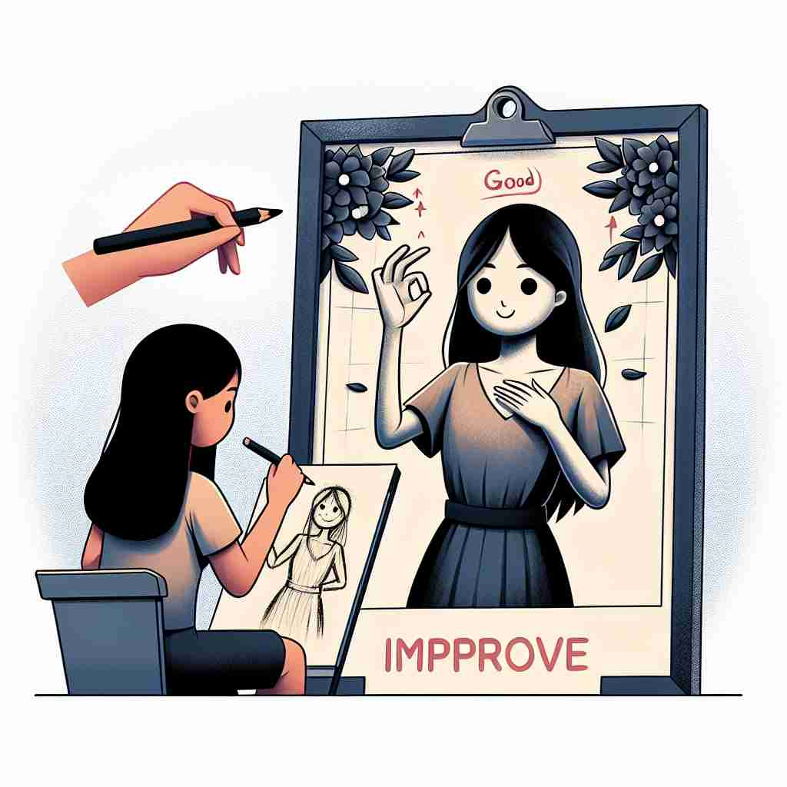

💬 The student wants to improve academic performance through hard work.

💬 The chef wants to improve the flavor of the soup.
💬 The workers want to improve the house for the family.

💬 The girl practices daily to improve her drawing.
🔈 [ɪm'pruːv]
🗝️ v. to make or become better
🖼️ 在一个灯光明亮的健身房里，一位教练正在指导学员如何进行拉伸。他们不断练习，每天都比前一天做得更好，从而体现出 'improve' 作为使变得更好的核心含义。
🔍 想象一个上升的箭头，代表'improve'的核心含义：变得更好。无论是提高质量、增加价值、变得更吸引人，还是达到更高标准，都可以用这个上升的箭头来联想。这个核心概念贯穿了'improve'的各种用法，帮助你更容易记住和理解它的多重含义。
💬 The student wants to improve academic performance through hard work.
💬 The chef wants to improve the flavor of the soup.
💬 The workers want to improve the house for the family.
💬 The girl practices daily to improve her drawing.
🌳 由前缀 "im-"（表示 "进入" 或 "使"）加上词根 "prove"（表示 "证明" 或 "测试"）组成。整体表示 "使变得更好" 或 "改善"。
💡 记忆 "improve" 时，可以联想为 "进入证明" 的过程，即通过某种方式使事情变得更好。想象通过 "证实" 某物来提升其质量或状态，有助于记住所表达的概念。
🗝️ v. to increase the value or quality of something
🖼️ 在一个古董市场中，一个卖家正在对一件旧家具进行打磨和抛光。他细致地处理每一个细节，最终显著提升了这件家具的价值和品质，这完美展示了 'improve' 意味着提升价值或质量的含义。
💬 Regular exercise can improve your health.
❓ 通过提升价值或质量来使其变得更好
🗝️ v. to make more attractive or pleasant
🖼️ 在一个家庭花园里，一位园艺爱好者正在种下一片多彩的花卉。他们悉心打理，使得整个花园变得更加赏心悦目和迷人，这就是 'improve' 作为让更具吸引力或愉快的含义。
💬 New curtains would improve the look of the room.
❓ 通过增加吸引力或愉悦感来使其变得更好
🗝️ v. to achieve a better standard or quality
🖼️ 在一个音乐练习室里，一位小提琴家正反复练习新的乐曲。他每天都在进步，演奏的质量越来越高，最终达到了一种更高的水平，这正体现了 'improve' 作为实现更高标准或质量的含义。
💬 His English has improved a lot since he moved to London.
❓ 通过达到更高标准或质量来变得更好
🗝️ v. to make good use of something
🖼️ 在一个繁忙的城市公园里，一位摄影师利用清晨柔和的光线拍摄美丽的自然景象。他充分利用这一光线条件，捕捉到了完美的照片，展示了 'improve' 在良好利用某事物方面的含义。
💬 We should improve our time management skills.
❓ 通过更好地利用来改善现状